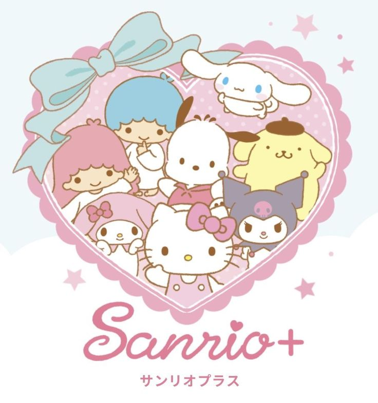
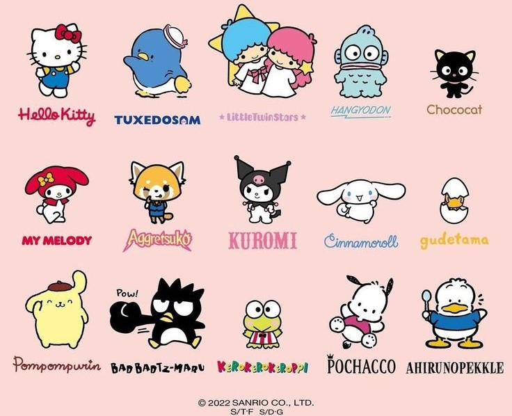
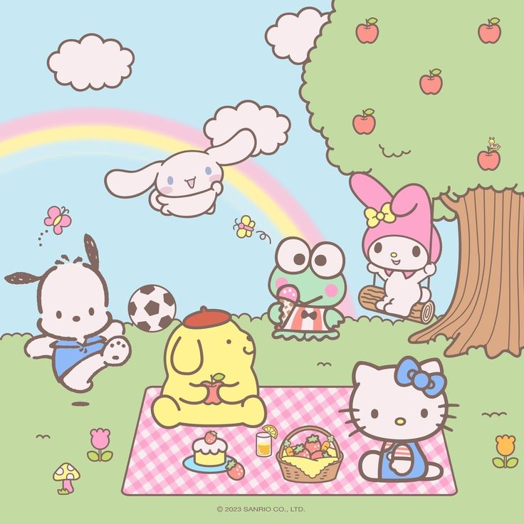

The early 2000s were a whirlwind of trends, colors, and innovation. I can't help but feel a connection to that time. Here's why:
1. Fashion Forward: The 2000s were all about experimentation. I like the Y2K aesthetic—the futuristic vibe that made everyone feel like they were part of a sci-fi movie. Those metallic fabrics, shiny blacks, and chunky accessories? Iconic!
2. Mixing Eras: The 2000s were like a fashion blender—throw in some '60s mod, '70s boho, and '80s glam!
3. Tech Chic: Flip phones, iPods, and chunky digital cameras, gadgets were as much a part of an outfits as some shoes.
So, here's to the 2000s—the era of dial-up internet, Tamagotchis, and cargo pants. As I scroll through my TikTok feed, I can't help but smile at the resurgence of Y2K fashion.
Sanrio is a "thing" that I like a lot, because there's so many cute characters, and it brings me back to when I was even younger than I am .
  